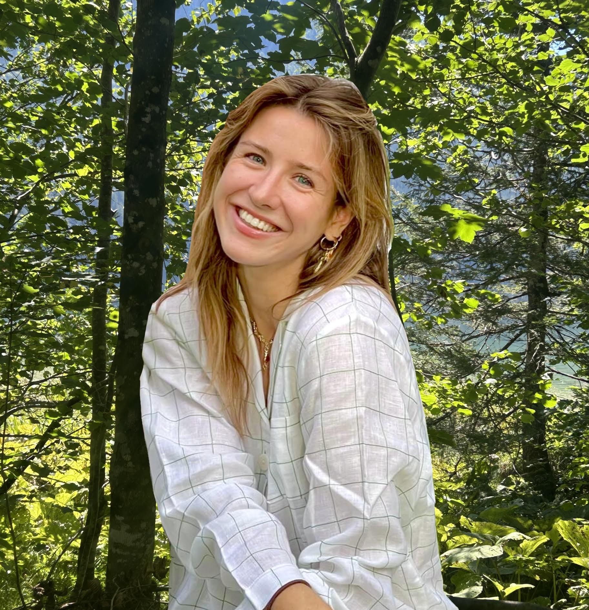
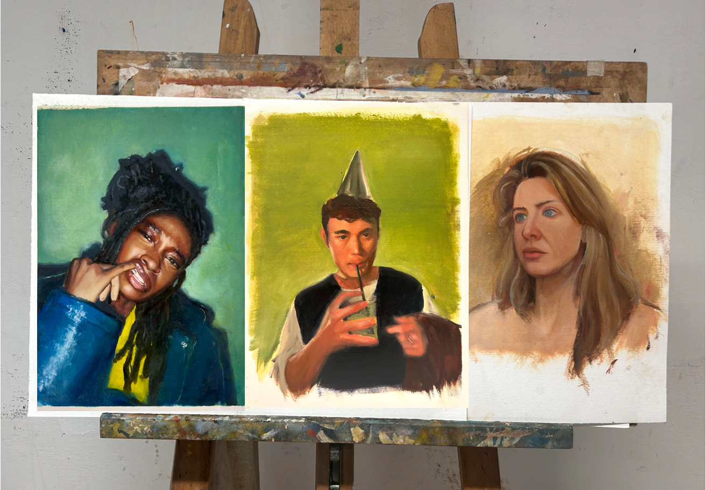
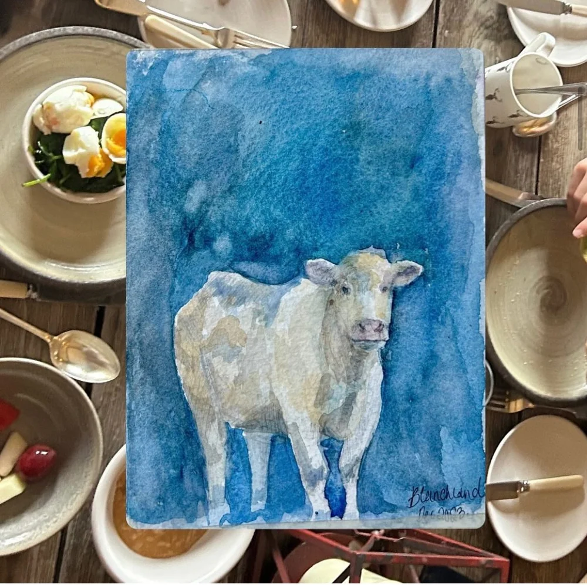
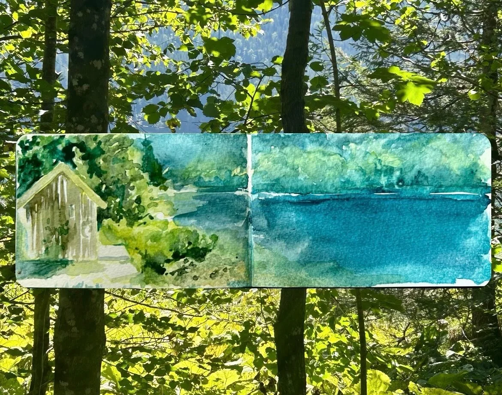
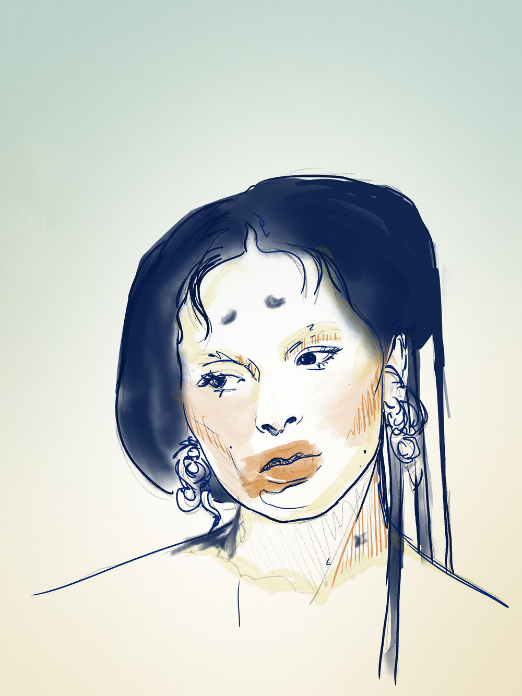
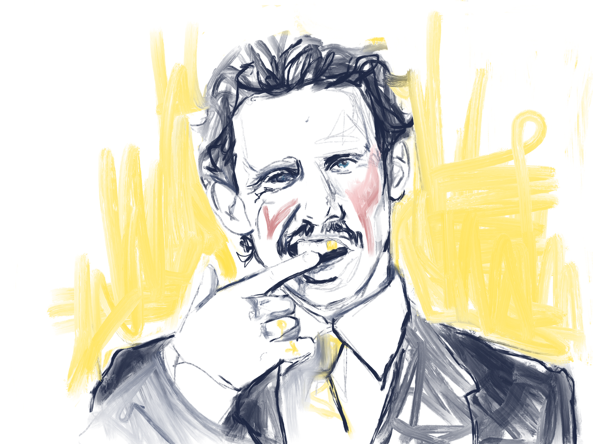

I like to explore science, build tech, and create art.

Currently completing projects in neuroscience and femtech before joining Entrepreneurs First in April 2026. Last year I was a research assistant at MIT's Lauffenburger lab, building bioinformatic pipelines using contemporary AI techniques. Previously, I spent two years in life sciences consulting, working on strategy and due diligence across healthcare, pharma, and biotech.
I've been painting for as long as I remember, self-taught across oil, watercolour, and digital. Currently working on a collection of London rappers while launching London's first Art Hackathon.





I am fascinated by new ways of seeing the world, whether through unconventional scientific ideas or artistic expression. Crossing disciplines opens the door to entirely new solutions.
Science is far more creative than people give it credit for. It's built on perception, imagination, and the art of making sense of data. Kuhn's The Structure of Scientific Revolutions reinforced that idea: new perspectives can completely reshape what we believe to be true.